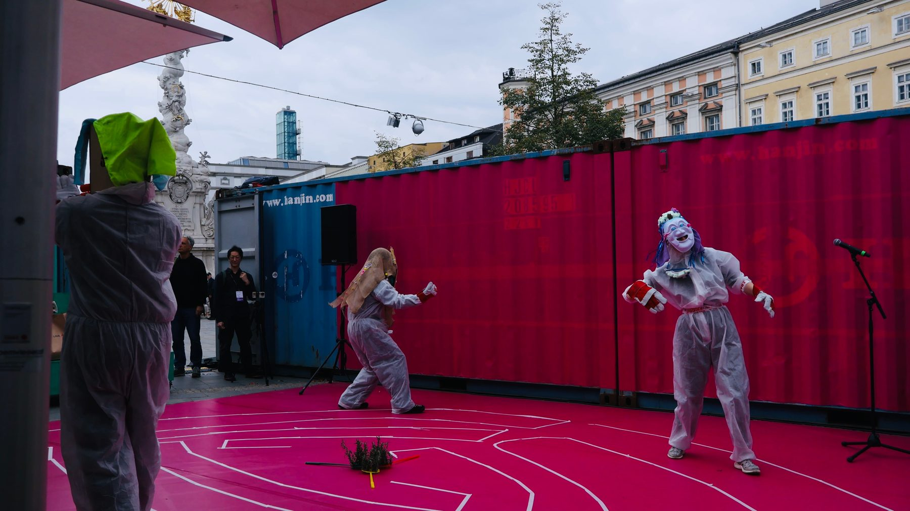
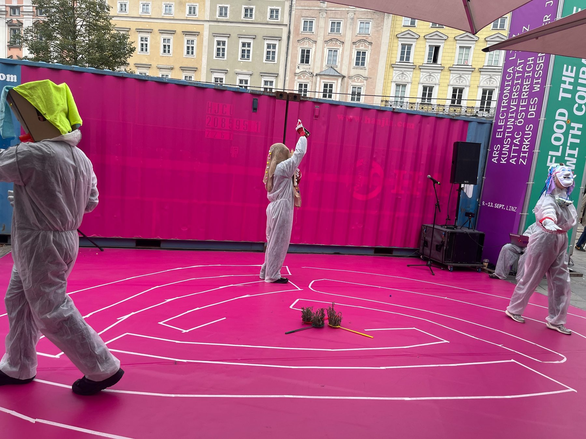
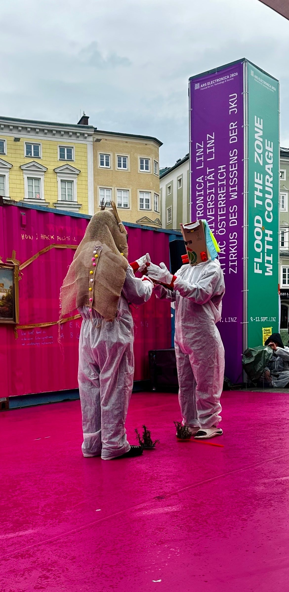
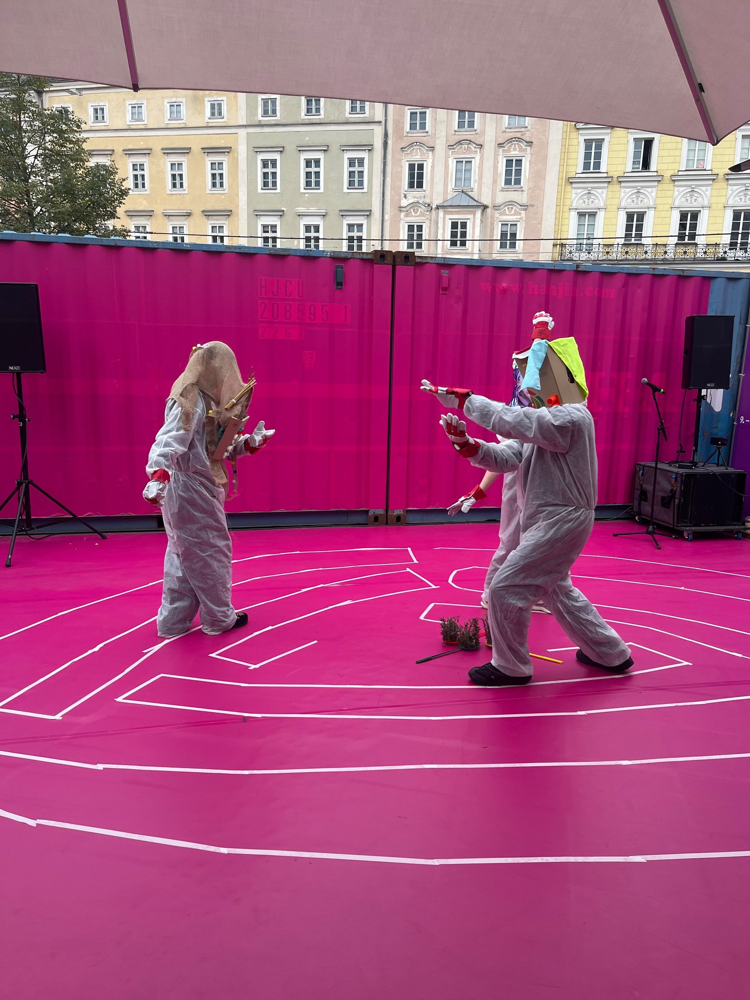
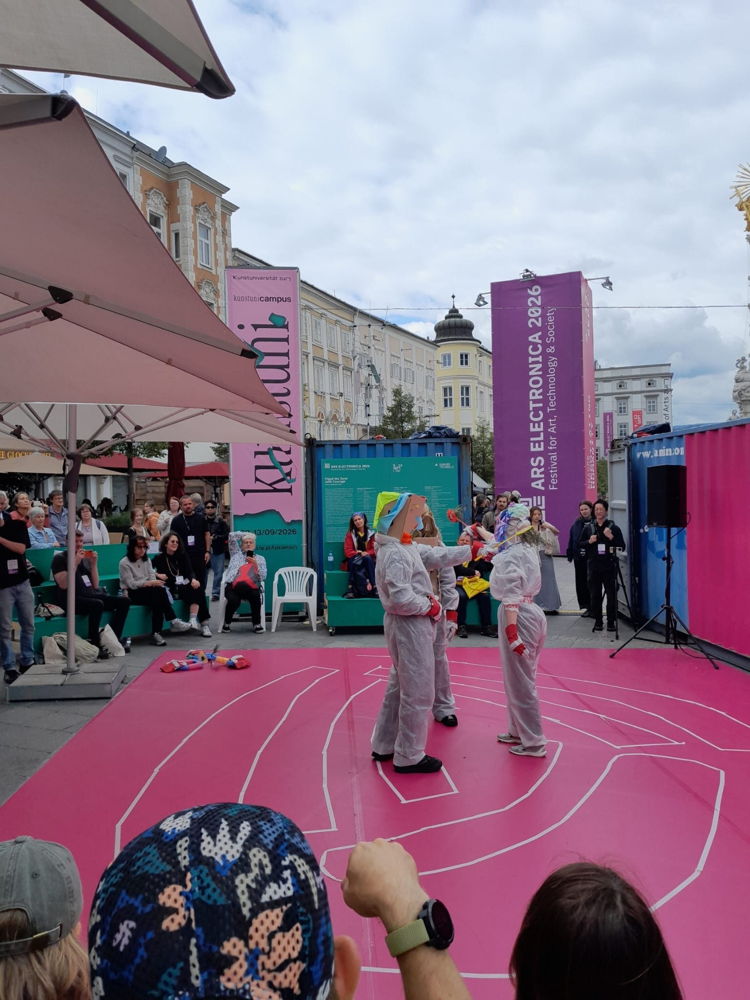

Ritual Robotics: Act 01

Ritual Robotics: Act 01 stages a participatory contemporary ritual in which folk tradition meets digital puppetry and robotics. It resists a future where digital technology isolates people rather than connecting them, and works instead to deepen communal practice for change.
The ritual takes place on a single labyrinth. Each audience member receives a performing object built from festival waste, and together they wind from the centre of the labyrinth outward and back again. A guided sequence leads the way at first. After that, the group continues through intuition, movement and digital technology.





Credits
- Co-lead artists
- Joseph Whitmore, Jimmy Chen
- Choreographic collaborator and performer
- Diana Alina Serbanescu
- Creative technologist
- Ruiyang Wang